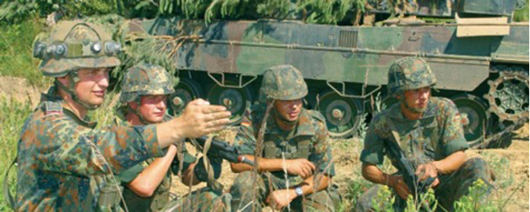
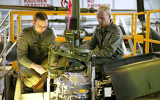

Laufbahn der Feldwebel
Feldwebel sind Soldaten, die bei der Bundeswehr eine Laufbahn, vergleichbar mit der zivilen Meisterebene, eingeschlagen haben. In den Laufbahnen der Feldwebel unterscheidet man die Laufbahnen der Feldwebel des Truppendienstes und die des allgemeinen Fachdienstes.
Feldwebel im Truppendienst übernehmen Verantwortung über Personal und Material. Sie sind mit der Ausbildung, Erziehung und Führung von Soldaten betraut. Feldwebel im allgemeinen Fachdienst sind Experten in ihrem jeweiligen Fachgebiet. Ihre Tätigkeit entspricht der eines Meisters in einem zivilen Unternehmen.
Einstieg in die Laufbahn der Feldwebel im Truppendienst
Die Feldwebel im Truppendienst werden in militärischer Hinsicht umfangreich ausgebildet und nehmen militärische Führungsaufgaben wahr. Als militärische Führer erwartet sie ein breites Spektrum an Führungsverwendungen. Sie sind beauftragt mit der Personalführung und Ausbildung der ihnen unterstellten Soldaten. Ihre Tätigkeitsfelder können darüber hinaus vom Fallschirmsprungeinsatz bis hin zum Bedienen von Führungs- und Waffeneinsatzsystemen auf Schiffen reichen.
Einstellungsvoraussetzungen:- Deutsche bzw. Deutscher im Sinne des Art. 116 des Grundgesetzes
- mindestens 17 Jahre alt
- Realschulabschluss
Einstieg in die Laufbahn der Feldwebel des allgemeinen Fachdienstes
Die Feldwebel im Truppendienst werden in militärischer Hinsicht umfangreich ausgebildet und nehmen militärische Führungsaufgaben wahr. Als militärische Führer erwartet sie ein breites Spektrum an Führungsverwendungen. Sie sind beauftragt mit der Personalführung und Ausbildung der ihnen unterstellten Soldaten. Ihre Tätigkeitsfelder können darüber hinaus vom Fallschirmsprungeinsatz bis hin zum Bedienen von Führungs- und Waffeneinsatzsystemen auf Schiffen reichen.
Die Feldwebel im Truppendienst werden in militärischer Hinsicht umfangreich ausgebildet und nehmen militärische Führungsaufgaben wahr. Als militärische Führer erwartet sie ein breites Spektrum an Führungsverwendungen. Sie sind beauftragt mit der Personalführung und Ausbildung der ihnen unterstellten Soldaten. Ihre Tätigkeitsfelder können darüber hinaus vom Fallschirmsprungeinsatz bis hin zum Bedienen von Führungs- und Waffeneinsatzsystemen auf Schiffen reichen.
Einstellungsvoraussetzungen:- Deutsche bzw. Deutscher im Sinne des Art. 116 des Grundgesetzes
- mindestens 17 Jahre alt
- Realschulabschluss
Kontakt
Weitere Informationen zur Laufbahn der Feldwebel des allgemeinen Fachdienstes finden Sie im Internet unter www.bundeswehr-karriere.de
Telefonisch erreichen Sie uns über unsere bundesweite kostenfreie Karriere-Hotline: 0800 9 80 08 80. Eine persönliche Beratung erhalten Sie bei dem für Sie zuständigen Karriereberater. Diesen finden Sie über unsere Ansprechpartnersuche
* Sie können mit höherem Dienstgrad eingestellt werden, wenn Sie über einen für die ausgeschriebene Stelle verwertbaren Beruf verfügen. Welche Berufe dafür in Frage kommen, erfahren Sie bei Ihrer zuständigen Wehrdienstberatung.- mail@volkswagen-karriere.de
- www.volkswagen-karriere.de
- Volkswagen AG
- Personalwesen
- Berliner Ring 2
- 38440 Wolfsburg